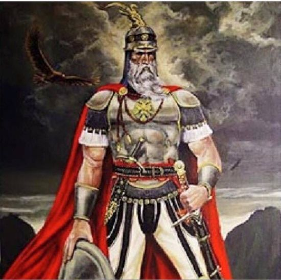

Historia e Skenderbeut
Gjergj Kastrioti (1405 – 17 janar 1468), i njohur si Skënderbeu (nga turqishtja osmane: اسکندر بگ İskender Bey) ishte një feudal dhe udhëheqës ushtarak arbër që në fillesë luftoi për Perandorinë Osmane dhe më pas drejtoi një kryengritje kundër saj. Anëtar i familjes fisnike të Kastriotëve, ai u dërgua si peng në oborrin osman, ku u arsimua dhe hyri në shërbim të sulltanit për njëzet vitet e ardhshme. U ngrit sipas gradave duke u bërë deri sanxhakbej i Sanxhakut të Dibrës në vitin 1440. Më 1443, ai dezertoi ushtrinë osmane gjatë betejës së Nishit dhe u bë sundimtar i Krujës, në një territor nga Petrela deri në Modriç. Në vitin 1444, ai themeloi Lidhjen e Lezhës me mbështetjen e fisnikërisë së kohës. Në vitin 1451, Skënderbeu nënshkroi traktatin e Gaetës, ku njohu sovranitetin de jure të Mbretërisë së Napolit mbi Arbërinë, duke siguruar një aleancë mbrojtëse, edhe pse mbeti një sundimtar i pavarur.[1] Në vitet 1460–61 mbështeti Ferdinandin I të Napolit në luftërat kundër Gjonit II të Anzhuinëve. Në vitin 1463 u bë komandanti kryesor i forcave kryqtare të papa Piut II, por papa vdiq ndërsa ushtritë ende po mblidheshin. Së bashku me venedikasit luftoi kundër osmanëve gjatë Luftës osmano–venedikase të viteve 1463–79, deri në vdekjen e tij në janar të vitit 1468. Skënderbeu shquhet si një ndër komandantët më të rëndësishëm të historisë ushtarake të kohës së tij, si më këmbëngulësi – dhe përherë fitimtari – kundër Perandorisë Osmane në kulmin e saj.